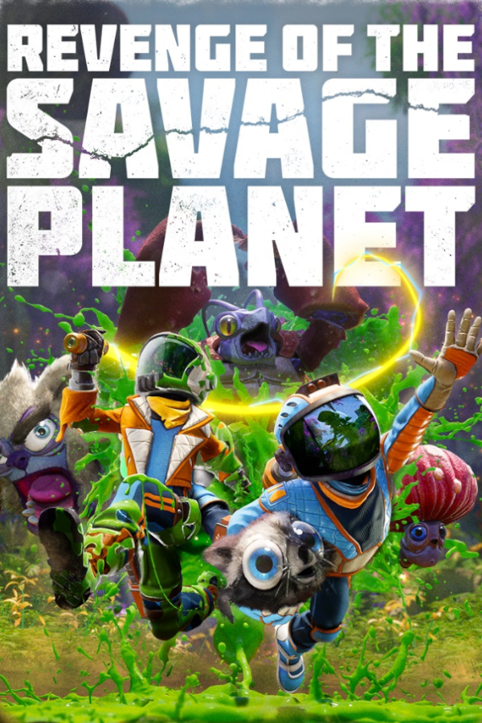

Revenge of the Savage Planet
Every archived year-end list appearance, including placement and points earned.
About the Game
COSMIC HOARDER EDITION COMPARISON GRID About the GameLAUNCH BONUSGrab a friend and blast-off in May with exclusive limited-time Steam launch perks. Purchase Revenge of the Savage Planet within the first month of launch to receive the Trash Panda Suit and a bonus copy of Journey to the Savage Planet. This buy-one-get-one bundle is only available on Steam and for the first month of launch. Additionally, purchase the first week on Steam and you’ll also receive a 10% discount. Don’t miss out, wishlist today so you can be notified of the release and to secure your spot in space! Launch news is right around the corner.WELCOME TO THE PIONEER PROGRAM!In a future knocked off its axis by corporate greed and stupidity, you have been made redundant and abandoned on the far edge of space with little gear and no safety net. You must explore every nook and cranny, collect dozens of upgrades, and turn over every mysterious alien rock if you want to get revenge on your former employer and return to Earth. Across multiple planets and through myriad challenges, you will be tasked with exploring and understanding these beautiful alien worlds. There are plants to scan, creatures to capture, lakes to swim, caves to spelunk, mountains to climb, upgrades to craft, and hundreds of secrets to uncover… DYNAMIC CO-OP Play with your best friend, partner or hellspawn on or between any platform! Or better still, experience the nostalgia tinged joy of sitting on the same couch and playing on the same screen with someone you love. Like the olden days when the world was young and we were happy. EXCITING FRESH ABILITIES AND TOOLSRun, Jump, Shoot, Grind, Stomp, Dodge, Slide, Whip and Grapple your way through the world! Experiment with 3 different types of gameplay goo! Lasso and Capture dozens of strange creatures and store them in Pens near your Habitat! FOUR PLANETS TO EXPLOREFour large, vibrant worlds to explore, each with their own weird and wonderful plants and creatures. Scan everything, catalog everything, and complete experiments to increase your science level… which unlocks exciting new gear! Plus… there may be more than four planets. Maybe. INTERGALACTIC HOARDERAlien plants! Bizarre creatures! Exciting gear! Weird rocks! Each planet is packed with nooks and crannies hiding all manner of rewards and secrets. Many of which can be displayed with pride in your own personal, customizable Space Trailer.
| Released | 2025-05-07 |
|---|---|
| Developer | Raccoon Logic Studios |
| Publisher | Raccoon Logic Studios |
| Genres | Action, Adventure |
| Platforms | PC |
SingleplayerSteam AchievementsMultiplayerFull controller supportSteam CloudCo-opOpen WorldcooperativeThird PersonSci-fiOnline Co-OpExploration
Game information provided by RAWG.
Points by Year
List History
| Year | Source | List | Placement | Points |
|---|---|---|---|---|
| 2025 | GameSpot | The Best Games Of 2025 | Unranked | 1 |
| 2025 | NPR | The best games of 2025, picked by NPR's staff | Unranked | 1 |